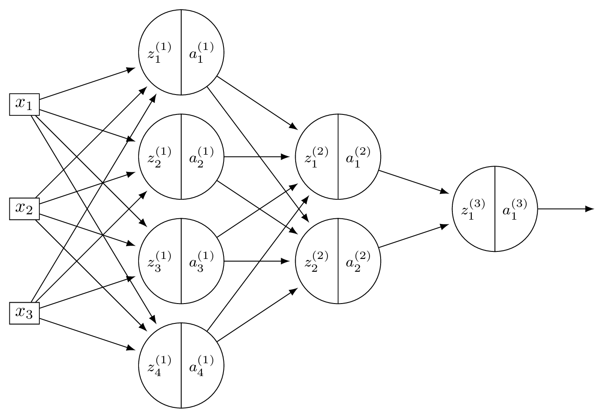
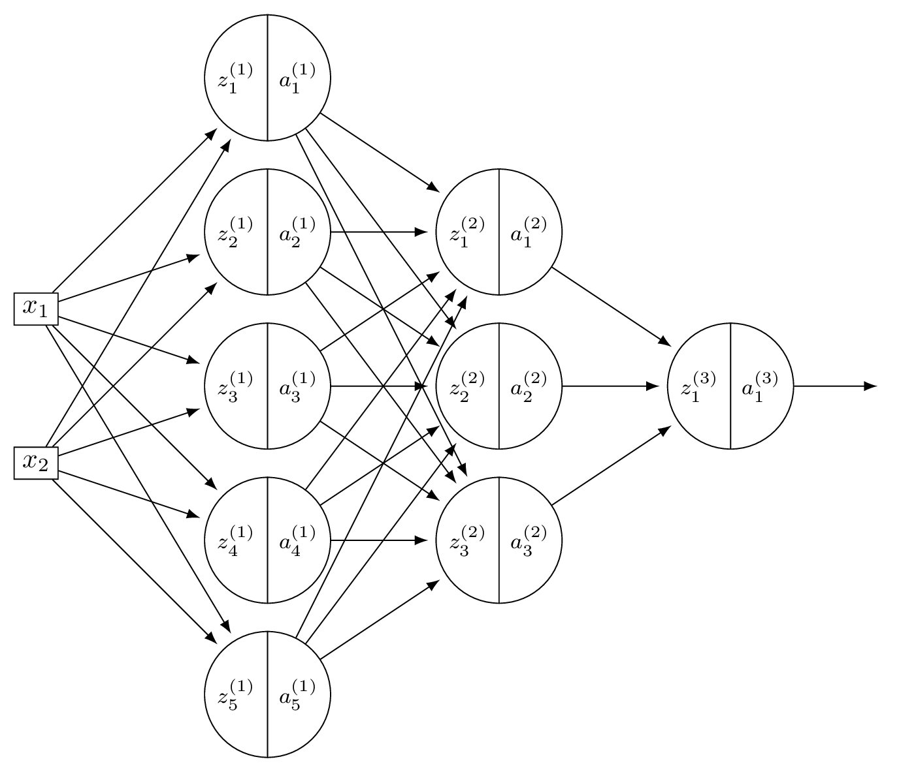

Midterm 02
Practice problems for topics on Midterm 02.
Tags in this problem set:
Problem #108
Tags: quiz-05, lecture-09, feature maps
Suppose you are given the following basis functions that define a feature map \(\vec\phi: \mathbb{R}^3 \to\mathbb{R}^4\):
What is the representation of the data point \(\vec{x} = (3, 2, -1)\) in the new feature space?
Solution
\((6, 4, 3, -6)\).
We compute each basis function at \(\vec{x} = (3, 2, -1)\):
So \(\vec\phi(\vec{x}) = (6, 4, 3, -6)\).
Problem #109
Tags: quiz-05, lecture-09, feature maps
Suppose you are given the following basis functions that define a feature map \(\vec\phi: \mathbb{R}^3 \to\mathbb{R}^4\):
What is the representation of the data point \(\vec{x} = (2, -1, 3)\) in the new feature space?
Solution
\((4, -3, 6, 3)\).
We compute each basis function at \(\vec{x} = (2, -1, 3)\):
So \(\vec\phi(\vec{x}) = (4, -3, 6, 3)\).
Problem #110
Tags: quiz-05, lecture-09, feature maps
Suppose you are given the following basis functions that define a feature map \(\vec\phi: \mathbb{R}^3 \to\mathbb{R}^4\):
What is the representation of the data point \(\vec{x} = (2, -3, 1)\) in the new feature space?
Solution
\((9, 2, -3, 4)\).
We compute each basis function at \(\vec{x} = (2, -3, 1)\):
So \(\vec\phi(\vec{x}) = (9, 2, -3, 4)\).
Problem #111
Tags: linear classifiers, quiz-05, lecture-09, feature maps
Suppose we have a feature map \(\varphi : \mathbb{R}^3 \to\mathbb{R}^4\) with the following basis functions:
A linear classifier in this feature space has learned the weight vector \(\vec{w} = (w_0, w_1, w_2, w_3, w_4) = (0.4,\; 0.3,\; -0.6,\; 1.3,\; 0.7)\), where \(w_0 = 0.4\) is the bias (intercept) term. The prediction function is:
What is the value of the prediction function \(H\) for the input point \(\vec{x} = (3, 2, -1)\) in the original \(\mathbb{R}^3\) space?
Solution
\(-0.5\).
First, we compute the feature representation of \(\vec{x} = (3, 2, -1)\):
So the feature vector is \(\varphi(\vec{x}) = (6, 4, 3, -6)\).
Then we compute the prediction function:
Problem #112
Tags: linear classifiers, quiz-05, lecture-09, feature maps
Suppose we have a feature map \(\varphi : \mathbb{R}^3 \to\mathbb{R}^4\) with the following basis functions:
A linear classifier in this feature space has learned the weight vector \(\vec{w} = (w_0, w_1, w_2, w_3, w_4) = (0.5,\; 0.25,\; -1,\; 0.5,\; -0.5)\), where \(w_0 = 0.5\) is the bias (intercept) term. The prediction function is:
What is the value of the prediction function \(H\) for the input point \(\vec{x} = (2, -1, 3)\) in the original \(\mathbb{R}^3\) space?
Solution
\(6\).
First, we compute the feature representation of \(\vec{x} = (2, -1, 3)\):
So the feature vector is \(\varphi(\vec{x}) = (4, -3, 6, 3)\).
Then we compute the prediction function:
Problem #113
Tags: linear classifiers, quiz-05, lecture-09, feature maps
Suppose we have a feature map \(\varphi : \mathbb{R}^3 \to\mathbb{R}^4\) with the following basis functions:
A linear classifier in this feature space has learned the weight vector \(\vec{w} = (w_0, w_1, w_2, w_3, w_4) = (2,\; -1,\; 3,\; 0.5,\; -2)\), where \(w_0 = 2\) is the bias (intercept) term. The prediction function is:
What is the value of the prediction function \(H\) for the input point \(\vec{x} = (1, -3, 2)\) in the original \(\mathbb{R}^3\) space?
Solution
\(-4.5\).
First, we compute the feature representation of \(\vec{x} = (1, -3, 2)\):
So the feature vector is \(\varphi(\vec{x}) = (4, 2, 3, 5)\).
Then we compute the prediction function:
Problem #114
Tags: linear classifiers, quiz-05, lecture-09, feature maps
Consider the following data in \(\mathbb{R}\):

Note that this data is not linearly separable in \(\mathbb{R}\). For each of the following transformations that map the data into \(\mathbb{R}^2\), determine whether the transformed data is linearly separable.
Part 1)
True or False: The transformation \(x \mapsto(x, x^3)\) makes the data linearly separable in \(\mathbb{R}^2\).
Solution
False.
Since \(x^3\) is a monotonically increasing function, the relative order of the points along the curve \(y = x^3\) is the same as in 1D. The classes remain interleaved and cannot be separated by a line.
Part 2)
True or False: The transformation \(x \mapsto(x, x^2)\) makes the data linearly separable in \(\mathbb{R}^2\).
Solution
True.
The green points have large \(x^2\) values (\(25\) and \(36\)) while the red points have small \(x^2\) values (\(0\) and \(1\)). A horizontal line such as \(x_2 = 10\) separates them.
Part 3)
True or False: The transformation \(x \mapsto(x, |x|)\) makes the data linearly separable in \(\mathbb{R}^2\).
Solution
True.
The green points have large \(|x|\) values (\(5\) and \(6\)) while the red points have small \(|x|\) values (\(0\) and \(1\)). A horizontal line such as \(x_2 = 3\) separates them.
Part 4)
True or False: The transformation \(x \mapsto(x, x)\) makes the data linearly separable in \(\mathbb{R}^2\).
Solution
False.
This transformation maps every point to the line \(y = x\) in \(\mathbb{R}^2\). The data is effectively still one-dimensional, and the classes remain interleaved along this line.
Problem #115
Tags: linear classifiers, quiz-05, lecture-09, feature maps
Consider the data shown below:

The data comes from two classes: \(\circ\) and \(+\).
Suppose a single basis function will be used to map the data to feature space where a linear classifier will be trained. Which of the below is the best choice of basis function?
Solution
\(\varphi(x_1, x_2) = x_1 \cdot x_2\).
The data has \(\circ\) points in quadrants where \(x_1\) and \(x_2\) have the same sign (so \(x_1 x_2 > 0\)) and \(+\) points where they have opposite signs (so \(x_1 x_2 < 0\)). The product \(x_1 \cdot x_2\) captures this separation, allowing a linear classifier in the 1D feature space to distinguish the classes.
Problem #116
Tags: linear classifiers, quiz-05, lecture-09, feature maps
Define the "triangle" basis function:
Three triangle basis functions \(\phi_1\), \(\phi_2\), \(\phi_3\) have centers \(c_1 = 1\), \(c_2 = 4\), and \(c_3 = 5\), respectively. These basis functions map data from \(\mathbb{R}\) to feature space \(\mathbb{R}^3\) via \(x \mapsto(\phi_1(x), \phi_2(x), \phi_3(x))^T\).
A linear predictor in feature space has equation:
Part 1)
What is the representation of \(x = 4.5\) in feature space?
Solution
\((0, 1/2, 1/2)^T\).
We evaluate each basis function at \(x = 4.5\):
Therefore, the feature space representation is \((0, 1/2, 1/2)^T\).
Part 2)
What is \(H(4.5)\) in the original space?
Solution
\(1\).
Using the feature space representation from part (a):
Part 3)
Plot \(H(x)\)(the prediction function in the original space) from 0 to 8 on the grid below.

Solution

Problem #117
Tags: linear classifiers, quiz-05, lecture-09, feature maps
Consider the data shown below:

The data comes from two classes: \(\circ\) and \(+\).
Suppose a single basis function will be used to map the data to feature space where a linear classifier will be trained. Which of the below is the best choice of basis function?
Solution
\(\varphi(x_1, x_2) = \min\{x_1, x_2\}\).
The data has \(\circ\) points where both coordinates are large and \(+\) points where at least one coordinate is small. The minimum of the two coordinates captures this: \(\circ\) points have a large minimum while \(+\) points have a small minimum. This allows a linear classifier in the 1D feature space to separate the classes.
Problem #118
Tags: linear classifiers, quiz-05, lecture-09, feature maps
Define the "box" basis function:
Three box basis functions \(\phi_1\), \(\phi_2\), \(\phi_3\) have centers \(c_1 = 1\), \(c_2 = 2\), and \(c_3 = 6\), respectively. These basis functions map data from \(\mathbb{R}\) to feature space \(\mathbb{R}^3\) via \(x \mapsto(\phi_1(x), \phi_2(x), \phi_3(x))^T\).
A linear predictor in feature space has equation:
Part 1)
What is the representation of \(x = 1.5\) in feature space?
Solution
\((1, 1, 0)^T\).
We evaluate each basis function at \(x = 1.5\):
Therefore, the feature space representation is \((1, 1, 0)^T\).
Part 2)
What is \(H(2.5)\)?
Solution
\(-1\).
First, we find the feature space representation of \(x = 2.5\):
Then:
Part 3)
Plot \(H(x)\)(the prediction function in the original space) from 0 to 8 on the grid below.

Solution

Problem #119
Tags: quiz-05, RBF networks, lecture-10
Suppose a Gaussian RBF network \(H(\vec x) : \mathbb{R}^2 \to\mathbb{R}\) is trained on a binary classification dataset using four Gaussian RBFs located at \(\vec\mu_1 = (0,0)\), \(\vec\mu_2 = (1,0)\), \(\vec\mu_3 = (0,1)\), and \(\vec\mu_4 = (1,1)\).
All four RBFs use the same width parameter, \(\sigma\).
After training, it is found that the weights corresponding to the four basis functions are \(w_1 = -3\), \(w_2 = 3\), \(w_3 = 3\), \(w_4 = -3\).
Which of the below could show the decision boundary of \(H\)? The plusses and minuses show where the prediction function, \(H\), is positive and negative.
Solution
The second plot is correct.
The weights \(w_2 = 3\) and \(w_3 = 3\) are positive at \((1,0)\) and \((0,1)\), while \(w_1 = -3\) and \(w_4 = -3\) are negative at \((0,0)\) and \((1,1)\). This means \(H\) is positive near \((1,0)\) and \((0,1)\) and negative near \((0,0)\) and \((1,1)\). The decision boundary separates these regions, running diagonally through the square.
Problem #120
Tags: lecture-10, quiz-05, RBF networks, feature maps
Let \(\mathcal{X} = \{(\vec{x}^{(1)}, y_1), \ldots, (\vec{x}^{(100)}, y_{100})\}\) be a dataset of 100 points, where each feature vector \(\vec{x}^{(i)}\in\mathbb{R}^{50}\). Suppose a Gaussian RBF network is trained using 25 Gaussian basis functions.
Recall that a Gaussian RBF network can be viewed as mapping the data to feature space, where a linear prediction rule is trained. In the above scenario, what is the dimensionality of this feature space?
Solution
\(25\).
Each Gaussian basis function produces one feature (the output of that basis function applied to the input). With 25 basis functions, the feature space is \(\mathbb{R}^{25}\). The dimensionality of the feature space equals the number of basis functions, not the original input dimension.
Problem #121
Tags: quiz-05, RBF networks, lecture-10
Does standardizing features affect the output of a Gaussian RBF network?
More precisely, let \(\mathcal{X} = \{(\vec{x}^{(1)}, y_1), \ldots, (\vec{x}^{(n)}, y_n)\}\) be a dataset, and let \(\mathcal{Z} = \{(\vec{z}^{(1)}, y_1), \ldots, (\vec{z}^{(n)}, y_n)\}\) be the dataset obtained by standardizing each feature in \(\mathcal{X}\)(that is, each feature is scaled to have unit standard deviation and zero mean). Note that the \(y_i\)'s are not standardized -- they are the same in both datasets.
Suppose \(H_\mathcal{X}(\vec{x})\) is a Gaussian RBF network trained by minimizing mean squared error on \(\mathcal{X}\), and \(H_\mathcal{Z}(\vec{z})\) is a Gaussian RBF network trained by minimizing mean squared error on \(\mathcal{Z}\). Both RBF networks use the same width parameters, \(\sigma\). The centers used in \(H_\mathcal{Z}\) are obtained by standardizing the centers used in \(H_\mathcal{X}\) using the mean and standard deviation of the data, \(\vec{x}^{(i)}\).
True or False: it must be the case that \(H_\mathcal{X}(\vec{x}^{(i)}) = H_\mathcal{Z}(\vec{z}^{(i)})\) for all \(i \in\{1, \ldots, n\}\).
Solution
False.
Standardizing changes the distances between points and centers. The Gaussian basis function \(\varphi(\vec{x}; \vec{\mu}, \sigma) = e^{-\|\vec{x} - \vec{\mu}\|^2 / \sigma^2}\) depends on the Euclidean distance \(\|\vec{x} - \vec{\mu}\|\). While the centers are standardized along with the data, the width parameter \(\sigma\) remains the same. Since standardizing changes the scale of the features (and thus the distances), using the same \(\sigma\) will produce different basis function outputs, leading to different predictions.
Problem #122
Tags: quiz-05, RBF networks, lecture-10
Consider the following labeled data set of three points:
A Gaussian RBF network \(H(x) : \mathbb{R}\to\mathbb{R}\) is trained on this data with two Gaussian basis functions of the form \(\varphi_i(x; \mu_i, \sigma_i) = e^{-(x - \mu_i)^2 / \sigma_i^2}\). The centers of the basis functions are at \(\mu_1 = 2\) and \(\mu_2 = 6\), and both use a width parameter of \(\sigma = \sigma_1 = \sigma_2 = 1\).
Suppose the RBF network does not have a bias parameter, so that the prediction function is \(H(x) = w_1 \varphi_1(x) + w_2 \varphi_2(x)\).
What is \(w_1\), approximately? Your answer may involve \(e\), but should evaluate to a number.
Solution
\(w_1 \approx 3e\).
We evaluate the basis functions at each data point. Note that when a basis function center is far from a data point, the Gaussian evaluates to approximately zero.
At \(x_1 = 1\): \(\varphi_1(1) = e^{-(1-2)^2} = e^{-1}\) and \(\varphi_2(1) = e^{-(1-6)^2} = e^{-25}\approx 0\).
At \(x_3 = 6\): \(\varphi_1(6) = e^{-(6-2)^2} = e^{-16}\approx 0\) and \(\varphi_2(6) = e^{0} = 1\).
So \(H(1) \approx w_1 e^{-1} = y_1 = 3\), giving \(w_1 \approx 3e\). Similarly, \(H(6) \approx w_2 = y_3 = 3\), confirming \(w_2 \approx 3\).
Problem #123
Tags: lecture-10, quiz-05, RBF networks, feature maps
Consider a Gaussian RBF network with three basis functions of the form \(\varphi_i(\vec x) = e^{-\|\vec x - \vec \mu^{(i)}\|^2 / \sigma^2}\), where \(\sigma = 2\) for all basis functions. The centers \(\vec\mu^{(1)}\), \(\vec\mu^{(2)}\), and \(\vec\mu^{(3)}\) are shown as black \(\times\) markers in the figure below.

Recall that a Gaussian RBF network can be viewed as mapping data points to a feature space, where the new representation of a point \(\vec x\) is:
Suppose a point \(\vec x\) has the following feature representation:
Which of the labeled points (a, b, c, or d) could be \(\vec x\)?
Solution
The answer is c.
The feature representation tells us that \(\varphi_1(\vec x) \approx 0\), \(\varphi_2(\vec x) \approx 0\), and \(\varphi_3(\vec x) \approx 0.73\).
Since a Gaussian basis function \(\varphi_i(\vec x) = e^{-\|\vec x - \vec \mu^{(i)}\|^2 / \sigma^2}\) outputs values close to 1 when \(\vec x\) is near the center \(\vec\mu^{(i)}\) and values close to 0 when \(\vec x\) is far from the center, the feature representation indicates that \(\vec x\) is far from \(\vec\mu^{(1)}\) and \(\vec\mu^{(2)}\)(since \(\varphi_1 \approx 0\) and \(\varphi_2 \approx 0\)), but relatively close to \(\vec\mu^{(3)}\)(since \(\varphi_3 \approx 0.73\)).
Looking at the figure, point c is the only point that is close to \(\vec\mu^{(3)}\) and far from both \(\vec\mu^{(1)}\) and \(\vec\mu^{(2)}\).
Problem #124
Tags: lecture-10, quiz-05, RBF networks, feature maps
Consider a Gaussian RBF network with three basis functions of the form \(\varphi_i(\vec x) = e^{-\|\vec x - \vec \mu^{(i)}\|^2 / \sigma^2}\), where \(\sigma = 3\) for all basis functions. The centers \(\vec\mu^{(1)}\), \(\vec\mu^{(2)}\), and \(\vec\mu^{(3)}\) are shown as black \(\times\) markers in the figure below.

Recall that a Gaussian RBF network can be viewed as mapping data points to a feature space, where the new representation of a point \(\vec x\) is:
One of the following is the feature representation of the highlighted point \(\vec x\). Which one?
Solution
The answer is \(\vec f(\vec x) \approx(0.18, 0.18, 0.26)^T\).
The highlighted point \(\vec x\) is not particularly close to any of the three centers. It is roughly equidistant from \(\vec\mu^{(1)}\) and \(\vec\mu^{(2)}\), and slightly closer to \(\vec\mu^{(3)}\).
Since a Gaussian basis function outputs values close to 1 only when the input is very near the center and decays toward 0 as the distance increases, we expect all three basis functions to output moderate, nonzero values. This rules out the first three options, which each have one large value and two zeros (corresponding to a point very close to a single center).
Problem #125
Tags: lecture-11, forward pass, quiz-06, neural networks
Consider a neural network \(H(\vec x)\) shown below:

Let the weights of the network be:
Assume that all nodes use linear activation functions, and that all biases are zero.
Suppose \(\vec x = (2, 0, -2)^T\).
Part 1)
What is \(a_1^{(1)}\)?
Solution
With linear activations, \(a = z\) at every node.
\(z_1^{(1)} = 3(2) + (-1)(0) + (-1)(-2) = 8\), so \(a_1^{(1)} = 8\).
Part 2)
What is \(a_2^{(2)}\)?
Solution
Layer 1: \(\vec a^{(1)} = (8, -4)^T\). Layer 2: \(z_2^{(2)} = 1(8) + 2(-4) = 0\), so \(a_2^{(2)} = 0\).
Part 3)
What is \(H(\vec x)\)?
Solution
Layer 2: \(\vec a^{(2)} = (36, 0)^T\). \(H(\vec x) = 2(36) + (-3)(0) = 72\).
Problem #126
Tags: neural networks, quiz-06, activation functions, forward pass, lecture-11
Consider a neural network \(H(\vec x)\) shown below:

Let the weights of the network be:
Assume that all hidden nodes use ReLU activation functions, that the output node uses a linear activation, and that all biases are zero.
Suppose \(\vec x = (2, 0, -2)^T\).
Part 1)
What is \(a_1^{(1)}\)?
Solution
\(z_1^{(1)} = 3(2) + (-1)(0) + (-1)(-2) = 8\), so \(a_1^{(1)} = \text{ReLU}(8) = 8\).
Part 2)
What is \(a_2^{(2)}\)?
Solution
\(z_2^{(1)} = 2(2) + 2(0) + 4(-2) = -4\), so \(a_2^{(1)} = \text{ReLU}(-4) = 0\). Now \(\vec a^{(1)} = (8, 0)^T\). Layer 2: \(z_2^{(2)} = 1(8) + 2(0) = 8\), so \(a_2^{(2)} = \text{ReLU}(8) = 8\).
Part 3)
What is \(H(\vec x)\)?
Solution
\(z_1^{(2)} = 5(8) + 1(0) = 40\), \(a_1^{(2)} = 40\). So \(\vec a^{(2)} = (40, 8)^T\). \(H(\vec x) = 2(40) + (-3)(8) = 56\).
Problem #127
Tags: lecture-11, quiz-06, neural networks, feature maps
Consider a neural network \(H(\vec x)\) shown below:

The first layer of this neural network can be thought of as a function \(f: \mathbb R^d \to\mathbb R^k\) mapping feature vectors to a new representation. What are \(d\) and \(k\) in this case?
Solution
\(d = 4\) and \(k = 2\).
The first layer takes the 4-dimensional input and maps it to a 2-dimensional representation (the number of nodes in the first hidden layer).
Problem #128
Tags: lecture-11, quiz-06, neural networks, feature maps
Consider a neural network \(H(\vec x)\) shown below:

The first layer of this neural network can be thought of as a function \(f: \mathbb R^d \to\mathbb R^k\) mapping feature vectors to a new representation. What is this new representation if
and \(\vec x = (3, -1)^T\)?
Solution
The new representation is \(\vec z^{(1)}\), where \(z_j^{(1)} = \sum_i W_{ij}^{(1)} x_i\). Computing:
So the new representation is \((11, 7, -1)^T\).
Problem #129
Tags: backpropagation, quiz-06, neural networks, lecture-12
Suppose \(H\) is the neural network shown below:

You may assume that all hidden and output nodes have a bias, but that the bias is just not drawn for simplicity.
The gradient of \(H\) with respect to the parameters is a vector. What is this vector's dimensionality?
Solution
Count all weights and biases. Layer 1: \(3 \times 4\) weights \(+ \; 4\) biases \(= 16\). Layer 2: \(4 \times 2\) weights \(+ \; 2\) biases \(= 10\). Output: \(2 \times 1\) weights \(+ \; 1\) bias \(= 3\). Total: \(16 + 10 + 3 = 29\).
Problem #130
Tags: backpropagation, quiz-06, neural networks, lecture-12
Suppose \(H\) is the neural network shown below:

You may assume that all hidden and output nodes have a bias, but that the bias is just not drawn for simplicity.
The gradient of \(H\) with respect to the parameters is a vector. What is this vector's dimensionality?
Solution
Count all weights and biases. Layer 1: \(2 \times 5\) weights \(+ \; 5\) biases \(= 15\). Layer 2: \(5 \times 3\) weights \(+ \; 3\) biases \(= 18\). Output: \(3 \times 1\) weights \(+ \; 1\) bias \(= 4\). Total: \(15 + 18 + 4 = 37\).
Problem #131
Tags: activation functions, lecture-11, quiz-06, neural networks
In the following, when we say a function \(f(x)\) "looks like a ReLU", we mean that it has a flat part where \(f(x) = 0\), and a linear part with a slope (not necessarily equal to one).
Suppose a deep neural network \(H(x): \mathbb R \to\mathbb R\) uses ReLU activations in all of its hidden layers.
Part 1)
Suppose in addition that the output node uses a linear activation. True or False: when plotted, \(H(x)\) must look like a ReLU.
Solution
False. A deep ReLU network with linear output is a piecewise linear function, but it can have many linear pieces, not just two. For example, a network with many hidden units can produce a function with several "bends" in it, which does not look like a ReLU.
Part 2)
Suppose instead that the output node also uses a sigmoid activation. True or False: when plotted, \(H(x)\) must look like a ReLU.
Solution
False. As in part (a), the hidden layers produce a piecewise linear function, which can have many linear pieces. Composing this with a sigmoid produces a smooth function bounded in \((0, 1)\); not necessarily a simple S-shaped curve, but certainly not a ReLU.
Problem #132
Tags: activation functions, lecture-11, quiz-06, neural networks
Suppose that when a deep neural network \(H(x): \mathbb R \to\mathbb R\) is plotted, the resulting graph looks like the following:

Part 1)
True or False: it is possible that the network uses ReLU activation in its hidden layers, and linear activation in its output layer.
Solution
True. A deep ReLU network with linear output produces a piecewise linear function, which is consistent with the plot.
Part 2)
True or False: it is possible that the network uses ReLU activation in its hidden layers, and ReLU activation in its output layer.
Solution
True. Applying ReLU at the output clips negative values to zero. If the piecewise linear function produced by the hidden layers already has the shape shown (non-negative everywhere it is nonzero), the output ReLU would not change it.
Part 3)
True or False: it is possible that the network uses linear activation in its hidden layers, and ReLU activation in its output layer.
Solution
False. Linear activation in all hidden layers makes the entire network a linear function. Applying ReLU at the output can only produce a function with at most one "cusp," which cannot match the multi-piece shape shown.
Now suppose the plot of \(H(x)\) looked like the below, instead:

Part 4)
True or False: it is possible that the network uses ReLU activation in its hidden layers, and ReLU activation in its output layer.
Solution
False. The shifted plot takes negative values in some region. ReLU at the output would clip those to zero, so the network cannot produce negative outputs. Since the plot shows negative values, this is impossible.
Problem #133
Tags: activation functions, lecture-11, quiz-06, neural networks
Consider two numbers \(z_1 = 10\), \(z_2 = -5\), and the ReLU activation function \(f(z) = \max(0, z)\). What is \(f(z_1) + f(z_2)\)?
Solution
\(f(z_1) + f(z_2) = \max(0, 10) + \max(0, -5) = 10 + 0 = 10\).
Problem #134
Tags: lecture-11, quiz-06, neural networks
Consider a neural network with \(d = 6\) input features, a single hidden layer of \(d' = 4\) nodes, and one output node. There is a bias in both the hidden layer and the output layer.
What is the total number of parameters in this network?
Solution
33.
The hidden layer has \((6 + 1) \times 4 = 28\) parameters. The output layer has \((4 + 1) \times 1 = 5\) parameters. Total: \(28 + 5 = 33\).
Problem #135
Tags: lecture-11, forward pass, quiz-06, neural networks
Consider a neural network with 2 input nodes, 2 hidden nodes, and 1 output node. There is no non-linear activation function used in the network (i.e., all activations are linear). The input is \((x_1, x_2) = (1, 1)\).
The weights and biases are as follows. Hidden layer: \(W^{(1)} = \begin{pmatrix} 1 & 1 \\ 1 & 1 \end{pmatrix}\), \(\vec b^{(1)} = (-1, -1)^T\). Output layer: \(\vec w^{(2)} = (-1, -1)^T\), \(b^{(2)} = -1\).
What is the output of this neural network?
Solution
Hidden node 1: \(\psi_1 = 1(1) + 1(1) - 1 = 1\).
Hidden node 2: \(\psi_2 = 1(1) + 1(1) - 1 = 1\).
Output: \(H = (-1)(1) + (-1)(1) - 1 = -3\).
Problem #136
Tags: activation functions, lecture-11, quiz-06, neural networks
The sigmoid function is \(f(x) = \dfrac{1}{1 + e^{-x}}\).
Use the chain rule to find \(f'(x)\), and evaluate \(f'(0)\).
Solution
Using the chain rule:
At \(x = 0\): \(f(0) = \frac{1}{1 + 1} = 0.5\), so \(f'(0) = 0.5 \cdot 0.5 = 0.25\).
Problem #137
Tags: activation functions, lecture-11, quiz-06, neural networks
Which of the following is generally true about linear activation functions in neural networks?
Solution
Linear activation results in linear prediction functions, regardless of the number of hidden layers or units.
If all activation functions are linear, then each layer computes a linear transformation of its input. The composition of linear transformations is itself a linear transformation, so the entire network collapses to a single linear model.
Problem #138
Tags: activation functions, lecture-11, quiz-06, neural networks
The sigmoid activation function is given as \(g(z) = \dfrac{1}{1 + e^{-z}}\).
Consider two points \(z_1 > 0\) and \(z_2 < 0\). Which of the following always holds true?
Solution
\(g(z_1) > g(z_2)\).
When \(z > 0\), \(g(z) > 0.5\); when \(z < 0\), \(g(z) < 0.5\). Therefore \(g(z_1) > 0.5 > g(z_2)\) always holds.
Problem #139
Tags: activation functions, lecture-11, quiz-06, neural networks
For the sigmoid activation function \(g(z) = \dfrac{1}{1 + e^{-z}}\), what is \(g(z) + g(-z)\) for any \(z \in\mathbb{R}\)?
Solution
\(g(z) + g(-z) = 1\).
Problem #140
Tags: activation functions, lecture-11, quiz-06, neural networks
The Leaky ReLU activation function is defined as \(g(z) = \max\{\alpha z, z\}\), where \(0 \leq\alpha < 1\).
What is \(g(-5)\) when \(\alpha = 0.01\)?
Solution
\(g(-5) = \max\{0.01 \cdot(-5),\; -5\} = \max\{-0.05,\; -5\} = -0.05\).
Problem #141
Tags: activation functions, lecture-11, quiz-06, neural networks
Suppose you are modeling the percentage change in stock prices each day as a regression problem by training a neural network. On some days the percentage change is positive; on others it is negative.
True or False: ReLU activation can be used in the output layer of the neural network for this task.
Solution
False.
ReLU activation in the output layer truncates all negative values to zero, so the network could never predict a negative percentage change.
Problem #142
Tags: quiz-07, backpropagation, lecture-13, neural networks
Consider a neural network \(H(\vec x)\) shown below:

Assume that all hidden nodes use ReLU activation functions, that the output node uses a linear activation, and that there are no biases.
Let the weights of the second layer of the network be: \( W^{(2)} = \begin{pmatrix} 5 & 1 \\ 1 & 2 \end{pmatrix}. \) In addition, suppose it is known that, when the network is evaluated at \(\vec x\) with weight vector \(\vec w\):
Part 1)
What is \(\partial H / \partial a_{1}^{(1)}\), as a number?
Solution
\(\dfrac{\partial H}{\partial a_1^{(1)}} = \sum_k W_{1k}^{(2)}\dfrac{\partial H}{\partial z_k^{(2)}} = 5(-3) + 1(1) = -14\).
Part 2)
What is \(\partial H / \partial a_{2}^{(1)}\), as a number?
Solution
\(\dfrac{\partial H}{\partial a_2^{(1)}} = \sum_k W_{2k}^{(2)}\dfrac{\partial H}{\partial z_k^{(2)}} = 1(-3) + 2(1) = -1\).
Part 3)
What is \(\partial H / \partial z_{1}^{(1)}\), as a number?
Solution
\(\dfrac{\partial H}{\partial z_1^{(1)}} = \dfrac{\partial H}{\partial a_1^{(1)}}\cdot g'(z_1^{(1)}) = -14 \cdot g'(3) = -14 \cdot 1 = -14\).
Part 4)
What is \(\partial H / \partial z_{2}^{(1)}\), as a number?
Solution
\(\dfrac{\partial H}{\partial z_2^{(1)}} = \dfrac{\partial H}{\partial a_2^{(1)}}\cdot g'(z_2^{(1)}) = -1 \cdot g'(-2) = -1 \cdot 0 = 0\).
Part 5)
What is \(\partial H / \partial W_{11}^{(2)}\), as a number?
Solution
\(\dfrac{\partial H}{\partial W_{11}^{(2)}} = a_1^{(1)}\cdot\dfrac{\partial H}{\partial z_1^{(2)}} = \text{ReLU}(3) \cdot(-3) = 3(-3) = -9\).
Part 6)
What is \(\partial H / \partial W_{21}^{(2)}\), as a number?
Solution
\(\dfrac{\partial H}{\partial W_{21}^{(2)}} = a_2^{(1)}\cdot\dfrac{\partial H}{\partial z_1^{(2)}} = \text{ReLU}(-2) \cdot(-3) = 0(-3) = 0\).
Problem #143
Tags: quiz-07, backpropagation, lecture-13, neural networks
Consider a neural network \(H(\vec x)\) shown below:

Assume that all hidden nodes use ReLU activation functions, that the output node uses a linear activation, and that there are no biases.
Let the weights of the second layer of the network be: \( W^{(2)} = \begin{pmatrix} 3 & -1 \\ -1 & 2 \end{pmatrix}. \) In addition, suppose it is known that, when the network is evaluated at \(\vec x\) with weight vector \(\vec w\):
Part 1)
What is \(\partial H / \partial a_{1}^{(1)}\), as a number?
Solution
\(\dfrac{\partial H}{\partial a_1^{(1)}} = \sum_k W_{1k}^{(2)}\dfrac{\partial H}{\partial z_k^{(2)}} = 3(-1) + (-1)(2) = -5\).
Part 2)
What is \(\partial H / \partial a_{2}^{(1)}\), as a number?
Solution
\(\dfrac{\partial H}{\partial a_2^{(1)}} = \sum_k W_{2k}^{(2)}\dfrac{\partial H}{\partial z_k^{(2)}} = (-1)(-1) + 2(2) = 5\).
Part 3)
What is \(\partial H / \partial z_{1}^{(1)}\), as a number?
Solution
\(\dfrac{\partial H}{\partial z_1^{(1)}} = -5 \cdot g'(2) = -5 \cdot 1 = -5\).
Part 4)
What is \(\partial H / \partial z_{2}^{(1)}\), as a number?
Solution
\(\dfrac{\partial H}{\partial z_2^{(1)}} = 5 \cdot g'(4) = 5 \cdot 1 = 5\).
Part 5)
What is \(\partial H / \partial W_{11}^{(2)}\), as a number?
Solution
\(\dfrac{\partial H}{\partial W_{11}^{(2)}} = a_1^{(1)}\cdot\dfrac{\partial H}{\partial z_1^{(2)}} = \text{ReLU}(2) \cdot(-1) = -2\).
Part 6)
What is \(\partial H / \partial W_{21}^{(2)}\), as a number?
Solution
\(\dfrac{\partial H}{\partial W_{21}^{(2)}} = a_2^{(1)}\cdot\dfrac{\partial H}{\partial z_1^{(2)}} = \text{ReLU}(4) \cdot(-1) = -4\).
Problem #144
Tags: quiz-07, backpropagation, lecture-13, neural networks
Consider a neural network \(H(\vec x)\) shown below:

Suppose that the ReLU is used on all hidden nodes, and the linear activation is used on the output node. There are no biases.
Fill in the blank without making reference to any derivatives (apart from \(g'\), which is the derivative of the ReLU):
Solution
The blank is: \(W_{22}^{(2)}\, g'(z_2^{(2)}) \, W_{21}^{(3)}\).
The weight \(W_{12}^{(1)}\) feeds into node 2 of layer 1, which connects to both nodes of layer 2 via \(W_{21}^{(2)}\) and \(W_{22}^{(2)}\). Each of those paths then continues to the output through \(W_{11}^{(3)}\) and \(W_{21}^{(3)}\), respectively.
Problem #145
Tags: quiz-07, backpropagation, lecture-13, neural networks
Consider a neural network \(H(\vec x)\) shown below:

Suppose that the ReLU is used on all hidden nodes, and the linear activation is used on the output node. There are no biases.
Fill in the blank without making reference to any derivatives (apart from \(g'\), which is the derivative of the ReLU):
Solution
The blank is: \(W_{12}^{(1)}\, g'(z_2^{(1)}) \, W_{21}^{(2)}\).
\(x_1\) feeds into both hidden nodes via \(W_{11}^{(1)}\) and \(W_{12}^{(1)}\). Each hidden node connects to the output. The full derivative is a sum over all paths from \(x_1\) to \(H\):
Problem #146
Tags: quiz-07, neural networks, lecture-13, activation functions, backpropagation
Suppose a deep network \(H(\vec x)\) uses a sigmoid activation in its output layer. Suppose as well that for a given input, \(\vec x\), \(H(\vec x) \approx 1\).
True or False: evaluated at this point \(\vec x\), \(\partial H / \partial W_{ij}^{(\ell)}\approx 0\) for all \(i, j, \ell\).
Solution
True.
The sigmoid function \(\sigma(z) = 1/(1 + e^{-z})\) satisfies \(\sigma'(z) = \sigma(z)(1 - \sigma(z))\). When \(H(\vec x) \approx 1\), the output of the sigmoid is near 1, so \(\sigma'(z) \approx 1 \cdot 0 = 0\).
Since every partial derivative \(\partial H / \partial W_{ij}^{(\ell)}\) includes the factor \(\sigma'(z^{(\text{out})})\)(by the chain rule through the output node), all partial derivatives are approximately zero.
Problem #147
Tags: quiz-07, neural networks, lecture-13, activation functions, backpropagation
Suppose a deep network \(H(\vec x)\) uses a ReLU activation in its output layer. Suppose as well that for a given input, \(\vec x\), \(H(\vec x) \approx 1\).
True or False: evaluated at this point \(\vec x\), \(\partial H / \partial W_{ij}^{(\ell)} = 0\) for all \(i, j, \ell\).
Solution
False.
Since \(H(\vec x) \approx 1 > 0\), the output of the ReLU is in the linear region where \(g'(z) = 1\). The output activation does not zero out the gradient, and the partial derivatives need not be zero.
Problem #148
Tags: quiz-07, backpropagation, lecture-13, neural networks
Suppose that the square loss is used to train a neural network \(H\) so that the empirical risk is
Each training point \((\vec x^{(i)}, y_i)\) contributes to the gradient of \(R\).
What is the contribution of the point \((\vec{x}^{(1)}, y^{(1)})\) to the gradient of \(R\) if \(H(\vec{x}^{(1)}; \vec{w}) = 1\) and \(y^{(1)} = 1\)?
Solution
\(0\).
The contribution of point \((\vec x^{(1)}, y^{(1)})\) to the gradient involves the factor \((H(\vec x^{(1)}; \vec w) - y^{(1)}) = 1 - 1 = 0\). Since this factor is zero, the entire contribution to the gradient from this point is zero.
Problem #149
Tags: quiz-07, backpropagation, lecture-13, neural networks
Consider the neural network shown below.

Assume that \(g\) is the activation function for the hidden layers, and that the output layer uses a linear activation. There are no biases. Here \(W^{(\ell)}\) denotes the weight matrix connecting layer \(\ell - 1\) to layer \(\ell\).
Part 1)
True or False: \(\dfrac{\partial H}{\partial z_1^{(2)}} = W_{11}^{(3)}\, g'(z_1^{(2)})\).
Solution
True. The output is \(H = z_1^{(3)}\)(linear activation), and \(z_1^{(3)} = W_{11}^{(3)} a_1^{(2)} + W_{21}^{(3)} a_2^{(2)}\). Since \(a_1^{(2)} = g(z_1^{(2)})\): \(\frac{\partial H}{\partial z_1^{(2)}} = W_{11}^{(3)}\cdot g'(z_1^{(2)})\).
Part 2)
True or False: \(\dfrac{\partial H}{\partial W_{21}^{(2)}} = W_{11}^{(3)}\, g'(z_1^{(2)}) \, a_2^{(1)}\).
Solution
True. By the chain rule, \(\frac{\partial H}{\partial W_{21}^{(2)}} = \frac{\partial H}{\partial z_1^{(2)}}\cdot\frac{\partial z_1^{(2)}}{\partial W_{21}^{(2)}}\). Since \(z_1^{(2)} = W_{11}^{(2)} a_1^{(1)} + W_{21}^{(2)} a_2^{(1)}\), we have \(\frac{\partial z_1^{(2)}}{\partial W_{21}^{(2)}} = a_2^{(1)}\). Thus \(\frac{\partial H}{\partial W_{21}^{(2)}} = W_{11}^{(3)}\, g'(z_1^{(2)}) \, a_2^{(1)}\).
Part 3)
True or False: \(\dfrac{\partial H}{\partial a_{2}^{(1)}} = W_{11}^{(3)}\, g'(z_1^{(2)}) \, W_{21}^{(2)}\).
Solution
False. The correct expression has two terms (one for each node in layer 2):
The given expression only includes the first term.
Problem #150
Tags: quiz-07, backpropagation, lecture-13, neural networks
Consider the neural network shown below, now with weights and inputs. Assume that the ReLU is the activation function for the hidden layers, and that the output layer uses a linear activation. There are no biases.

The blue numbers on the edges denote the weights, and the blue numbers above the \(z\)'s and \(a\)'s denote their values. Specifically: \(\vec x = (-2, 3)^T\). Layer 1: \(z_1^{(1)} = -13\), \(a_1^{(1)} = 0\); \(z_2^{(1)} = 9\), \(a_2^{(1)} = 9\). Layer 2: \(z_1^{(2)} = 0\), \(a_1^{(2)} = 0\); \(z_2^{(2)} = 9\), \(a_2^{(2)} = 9\). Output: \(z_1^{(3)} = -18\), \(a_1^{(3)} = -18\).
True or False: \(\partial H / \partial W_{ij}^{(\ell)} = 0\) for all \(i, j, \ell\).
Solution
False.
While \(z_1^{(2)} = 0\) means \(g'(z_1^{(2)}) = 0\)(treating \(g'(0) = 0\) for ReLU), the second node in layer 2 has \(z_2^{(2)} = 9 > 0\), so \(g'(z_2^{(2)}) = 1\) and gradient flows through it.
In particular, \(a_2^{(2)} = 9 \neq 0\), so the derivative of \(H\) with respect to the output weight \(W_{12}^{(3)}\) is \(\frac{\partial H}{\partial W_{12}^{(3)}} = \frac{\partial H}{\partial z_1^{(3)}}\cdot a_2^{(2)}\), which is nonzero since \(a_2^{(2)} = 9\).
Problem #151
Tags: quiz-07, backpropagation, lecture-13, neural networks
Consider the neural network shown below, now with different weights and inputs. Assume that the ReLU is the activation function for the hidden layers, and that the output layer uses a linear activation. There are no biases.

The blue numbers on the edges denote the weights, and the blue numbers above the \(z\)'s and \(a\)'s denote their values. The weight matrices are:
The input is \(\vec x = (1, 3)^T\). The intermediate values are: Layer 1: \(z_1^{(1)} = 11\), \(a_1^{(1)} = 11\); \(z_2^{(1)} = 4\), \(a_2^{(1)} = 4\). Layer 2: \(z_1^{(2)} = 22\), \(a_1^{(2)} = 22\); \(z_2^{(2)} = 15\), \(a_2^{(2)} = 15\). Output: \(H(\vec x) = 36\).
Compute each of the following:
Part 1)
\(\partial H / \partial z_1^{(2)}\)
Solution
The output is \(H = W_{11}^{(3)} a_1^{(2)} + W_{21}^{(3)} a_2^{(2)}\)(linear output). So \(\partial H / \partial a_1^{(2)} = W_{11}^{(3)} = 3\). Since \(z_1^{(2)} = 22 > 0\), \(g'(z_1^{(2)}) = 1\). Thus:
Part 2)
\(\partial H / \partial a_2^{(1)}\)
Solution
We need \(\partial H / \partial z_k^{(2)}\) for both nodes: \(\partial H / \partial z_1^{(2)} = 3\)(from part (a)), and \(\partial H / \partial z_2^{(2)} = W_{21}^{(3)}\cdot g'(15) = (-2)(1) = -2\). Then:
Part 3)
\(\partial H / \partial W_{11}^{(1)}\)
Solution
First, \(\frac{\partial H}{\partial a_1^{(1)}} = \frac{\partial H}{\partial z_1^{(2)}} W_{11}^{(2)} + \frac{\partial H}{\partial z_2^{(2)}} W_{12}^{(2)} = 3(2) + (-2)(1) = 4\). Since \(g'(z_1^{(1)}) = g'(11) = 1\): \(\frac{\partial H}{\partial z_1^{(1)}} = 4 \cdot 1 = 4\). Finally:
Problem #152
Tags: vanishing gradients, quiz-07, lecture-14, neural networks
Which of the following best describes the vanishing gradient problem that can occur while training deep neural networks using backpropagation?
Solution
Partial derivatives of parameters in layers far from the output become very small.
During backpropagation, the chain rule multiplies many factors together as the gradient propagates from the output back through each layer. If these factors are small (e.g., because of sigmoid activations whose derivatives are at most \(1/4\)), the product shrinks exponentially with depth. This means that parameters in early layers (far from the output) receive very small gradient updates and learn very slowly.
Problem #153
Tags: quiz-07, backpropagation, lecture-13, neural networks
Suppose \(H\) is a fully-connected neural network with 3 input features, 4 nodes in the first hidden layer, 2 nodes in the second hidden layer, and a single output node. Assume that all hidden and output nodes have a bias.
The gradient of \(H\) with respect to the parameters is a vector. What is this vector's dimensionality?
Solution
\(29\).
We count the number of weights and biases in each layer. Layer 1 (\(3 \to 4\)): \(3 \times 4 = 12\) weights \(+ \; 4\) biases \(= 16\). Layer 2 (\(4 \to 2\)): \(4 \times 2 = 8\) weights \(+ \; 2\) biases \(= 10\). Output (\(2 \to 1\)): \(2 \times 1 = 2\) weights \(+ \; 1\) bias \(= 3\). Total: \(16 + 10 + 3 = 29\).
Problem #154
Tags: quiz-07, backpropagation, lecture-13, neural networks
Suppose \(H\) is a fully-connected neural network with 2 input features, 5 nodes in the first hidden layer, 3 nodes in the second hidden layer, and a single output node. Assume that all hidden and output nodes have a bias.
The gradient of \(H\) with respect to the parameters is a vector. What is this vector's dimensionality?
Solution
\(37\).
We count the number of weights and biases in each layer. Layer 1 (\(2 \to 5\)): \(2 \times 5 = 10\) weights \(+ \; 5\) biases \(= 15\). Layer 2 (\(5 \to 3\)): \(5 \times 3 = 15\) weights \(+ \; 3\) biases \(= 18\). Output (\(3 \to 1\)): \(3 \times 1 = 3\) weights \(+ \; 1\) bias \(= 4\). Total: \(15 + 18 + 4 = 37\).
Problem #155
Tags: vanishing gradients, quiz-07, lecture-14, neural networks
True or False: one solution to the vanishing gradient problem is to increase the learning rate \(\eta\).
Solution
False.
Increasing the learning rate does not fix the vanishing gradient problem. Vanishing gradients arise because, during backpropagation, the chain rule multiplies many small factors together, causing gradients in early layers to shrink exponentially with depth. Increasing \(\eta\) scales all gradient updates equally, so the relative imbalance between layers remains: early-layer gradients are still exponentially smaller than later-layer gradients.
Actual solutions to the vanishing gradient problem include using ReLU activations (whose derivatives are \(0\) or \(1\), rather than always small), skip connections, and batch normalization.
Problem #156
Tags: gradient descent, quiz-07, lecture-14
Recall that the gradient of the square loss at a single data point \((\vec x, y)\) is:
Suppose you are running gradient descent to minimize the empirical risk with respect to the squared loss in order to train a function \(H(x) = w_0 + w_1 x\) on the following data set: \((x, y) \in\{(1, 3),\;(2, 3),\;(3, 6)\}\).
Suppose that the initial weight vector is \(\vec w = (0, 0)^T\) and that the learning rate \(\eta = 1/2\). What will be the weight vector after one iteration of gradient descent?
Solution
\((4, 9)^T\).
To perform gradient descent, we need to compute the gradient of the risk. The main thing to remember is that the gradient of the risk is the average of the gradient of the loss on each data point.
So to start this problem, calculate the gradient of the loss for each of the three points. Our formula for the gradient of the squared loss tells us to compute \(2(\Aug(\vec x) \cdot\vec w - y) \Aug(\vec x)\) for each point.
Now, the initial weight vector \(\vec w\) was conveniently chosen to be \(\vec 0\), meaning that \(\operatorname{Aug}(\vec x) \cdot\vec w = 0\) for all of our data points. Therefore, when we compute \(\operatorname{Aug}(\vec x) \cdot\vec w - y\), we get \(-y\) for every data point. The gradient of the loss at each of the three data points is:
Point \((1, 3)\): \(2(0 - 3)(1, 1)^T = (-6, -6)^T\) Point \((2, 3)\): \(2(0 - 3)(1, 2)^T = (-6, -12)^T\) Point \((3, 6)\): \(2(0 - 6)(1, 3)^T = (-12, -36)^T\) This means that the gradient of the risk is the average of these three:
The gradient descent update rule says that \(\vec w^{(1)} = \vec w^{(0)} - \eta\nabla R(\vec w^{(0)})\). The learning rate \(\eta\) was given as \(1/2\), so we have:
Problem #157
Tags: gradient descent, quiz-07, lecture-14
Recall that the gradient of the squared loss at a single data point \((\vec x, y)\) is:
Suppose you are running stochastic gradient descent to minimize the empirical risk with respect to the squared loss in order to train a function \(H(x) = w_0 + w_1 x\) on the following data set: \((x, y) \in\{(1, 2),\;(3, 5),\;(2, 1),\;(4, 4),\;(5, 8)\}\).
Suppose that the initial weight vector is \(\vec w = (0, 0)^T\), the learning rate is \(\eta = 1/2\), and the mini-batch size is 2. If the first mini-batch consists of the 1st and 4th data points, what will be the weight vector after one iteration of stochastic gradient descent?
Solution
\((3, 9)^T\).
Stochastic gradient descent works like gradient descent, but instead of computing the gradient of the risk over the entire data set, we compute the gradient over a mini-batch --- a small, randomly-chosen subset of the data. The gradient of the risk on the mini-batch is the average of the gradient of the loss on each point in the mini-batch.
The mini-batch consists of the 1st and 4th data points: \((1, 2)\) and \((4, 4)\). We compute the gradient of the squared loss at each of these points using \(2(\Aug(\vec x) \cdot\vec w - y) \Aug(\vec x)\).
Since \(\vec w = \vec 0\), we have \(\Aug(\vec x) \cdot\vec w = 0\) for both points.
Point \((1, 2)\): \(2(0 - 2)(1, 1)^T = (-4, -4)^T\) Point \((4, 4)\): \(2(0 - 4)(1, 4)^T = (-8, -32)^T\) The gradient of the risk on the mini-batch is the average:
Applying the update rule \(\vec w^{(1)} = \vec w^{(0)} - \eta\nabla R(\vec w^{(0)})\) with \(\eta = 1/2\):
Problem #158
Tags: quiz-07, SGD, neural networks, gradient descent, lecture-14
True or False: in stochastic gradient descent, each update step moves in the direction of steepest descent of the empirical risk.
Solution
False.
Each update step moves in the direction of steepest descent of the risk computed on the mini-batch, not the full training set. The mini-batch gradient is only an approximation of the true gradient of the empirical risk. This is what makes each iteration of SGD fast --- computing the gradient over a small mini-batch of \(m\) points is much cheaper than computing it over all \(n\) points --- but it means that the update direction is noisy.
Problem #159
Tags: quiz-07, SGD, neural networks, gradient descent, lecture-14
True or False: stochastic gradient descent generally requires fewer iterations than gradient descent to converge.
Solution
False.
SGD typically requires more iterations than gradient descent to converge, because each update uses a noisy approximation of the true gradient. However, each iteration of SGD is much cheaper (\(O(md)\) vs. \(O(nd)\) for a mini-batch of size \(m \ll n\)), so SGD often converges faster in terms of total computation time.
Problem #160
Tags: gradient descent, quiz-07, lecture-14, neural networks
True or False: if two neural networks have the same architecture but different random initializations, they are guaranteed to converge to the same solution when trained with gradient descent on the same data.
Solution
False.
The loss surface of a neural network is non-convex, meaning it has many local minima. Different random initializations place the starting point at different locations on this surface, so gradient descent can follow different paths and converge to different local minima. This is one reason why initialization matters in practice.
Problem #161
Tags: lecture-15, convolutional neural networks
A grayscale image of size \(32 \times 32 \times 1\) is convolved with a filter of size \(5 \times 5\). No padding is applied, and the stride is 1. What is the shape of the output response map?
Solution
\(28 \times 28 \times 1\).
With no padding and stride 1, the output height and width are each \(32 - 5 + 1 = 28\). The filter slides over each \(5 \times 5\) block of the image from left to right and top to bottom, producing one output value per position.
Problem #162
Tags: lecture-15, convolutional neural networks
An input \(5 \times 5\) grayscale image \((I)\) is represented by the matrix below.
Suppose you convolve \(I\) with the \(3 \times 3\) filter
to get the response map \(I'\)(with stride 1 and no padding). What is the value of \(I'_{11}\) -- the entry in the 1st row and 1st column of the output?
Solution
\(I'_{11} = 0.6\).
The \(3 \times 3\) patch at the top-left corner of \(I\) is:
Applying the filter element-wise and summing:
Problem #163
Tags: lecture-15, convolutional neural networks
An input image has shape \(80 \times 80 \times 11\), where \(11\) is the number of channels. We wish to convolve this image with a 3D filter of shape \(5 \times 5 \times k\). What must the value of \(k\) be for the convolution to work?
Solution
\(k = 11\).
A 3D convolution filter must have the same number of channels as the input. The filter slides spatially across the height and width of the image, but at each position it computes a dot product across all channels. Therefore the filter's third dimension must match the input's channel count.
Problem #164
Tags: lecture-15, convolutional neural networks
Consider a convolutional neural network with the following architecture. The input is a \(10 \times 10 \times 1\) grayscale image. It passes through Conv layer 1 (3 filters of size \(3 \times 3\), stride 1, no padding), producing an output of shape \(8 \times 8 \times 3\). Then \(2 \times 2\) max pooling is applied, producing an output of shape \(4 \times 4 \times 3\). Next is Conv layer 2 (5 filters of size \(3 \times 3 \times 3\), stride 1, no padding), producing an output of shape \(2 \times 2 \times 5\). This is flattened and fed into a fully connected layer with \(n\) nodes, followed by an output layer with 1 node.
Part 1)
What is the value of \(n\)?
Solution
\(n = 20\).
The output of Conv layer 2 is \(2 \times 2 \times 5\). Flattening this gives \(2 \times 2 \times 5 = 20\) values, so the fully connected layer has \(20\) nodes.
Part 2)
What is the total number of learnable parameters in the network, excluding biases?
Solution
\(182\).
Conv layer 1 has 3 filters of shape \(3 \times 3\), each with \(9\) weights, for \(3 \times 9 = 27\) parameters. Conv layer 2 has 5 filters of shape \(3 \times 3 \times 3\), each with \(27\) weights, for \(5 \times 27 = 135\) parameters. The fully connected layer connects to the output: \(20 \times 1 = 20\) parameters. The grand total is \(27 + 135 + 20 = 182\).
Note that max pooling has no learnable parameters.
Problem #165
Tags: lecture-15, convolutional neural networks
An input \(4 \times 4\) grayscale image \((I)\) is represented by the matrix below.
\(2 \times 2\) max pooling is applied to this image. What is the resulting output?
Solution
\(\begin{pmatrix} 0.7 & 0.8 \\ 0.8 & 0.9 \end{pmatrix}\).
With \(2 \times 2\) max pooling, we divide the \(4 \times 4\) image into four non-overlapping \(2 \times 2\) blocks and take the maximum of each. Top-left: \(\max\{0.7, 0.2, 0.3, 0.5\} = 0.7\). Top-right: \(\max\{0.1, 0.8, 0.4, 0.2\} = 0.8\). Bottom-left: \(\max\{0.6, 0.1, 0.2, 0.8\} = 0.8\). Bottom-right: \(\max\{0.9, 0.3, 0.5, 0.6\} = 0.9\).